UD 2 El lenguaje PHP. Básico 2
Duración Estimada: 8 sesiones, 16 horas
RA2 Escribe sentencias ejecutables por un servidor Web reconociendo y aplicando procedimientos de integración del código en lenguajes de marcas.
- A Se han reconocido los mecanismos de generación de páginas Web a partir de lenguajes de marcas con código embebido.
- B Se han identificado las principales tecnologías asociadas.
- C Se han utilizado etiquetas para la inclusión de código en el lenguaje de marcas.
- D Se ha reconocido la sintaxis del lenguaje de programación que se ha de utilizar.
- E Se han escrito sentencias simples y se han comprobado sus efectos en el documento resultante.
- F Se han utilizado directivas para modificar el comportamiento predeterminado.
- G Se han utilizado los distintos tipos de variables y operadores disponibles en el lenguaje.
- H Se han identificado los ámbitos de utilización de las variables.
RA3 Escribe bloques de sentencias embebidos en lenguajes de marcas, seleccionando y utilizando las estructuras de programación.
- A Se han utilizado mecanismos dedecisión en la creación de bloques de sentencias.
- B Se han utilizado bucles y se ha verificado su funcionamiento.
- C Se han utilizado «arrays» para almacenar y recuperar conjuntos de datos.
- D Se han creado y utilizado funciones.
- E Se han utilizado formularios Web para interactuar con el usuario del navegador Web.
- F Se han empleado métodos para recuperar la información introducida en el formulario.
- G Se han añadido comentarios al código
OBJETIVOS SEMANALES
Instalar Entorno PHP
Crear y compartir Repositorio GitHub
Primeros programas PHP y subir al repositorio
Introducción
En la clase anterior estudiamos los tipos y el ámbito de las variables.
Veamos ahora algunos detalles como otros elementos del lenguaje que te permitan crear programas completos en PHP.
Los programas escritos en PHP, además de encontrarse estructurados normalmente en varias páginas suelen incluir en una misma página varios bloques de código.
- Cada bloque de código debe ir entre delimitadores, y en caso de que genere alguna salida, ésta se introduce en el código HTML en el mismo punto en el que figuran las instrucciones en PHP.
Por ejemplo, en las siguientes líneas tenemos dos bloques de código en PHP:
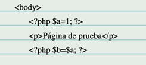
Aunque no se utilice el valor de las variables, en elsegundo bloque de código la variable $a mantiene el valor 1 que se le ha asignado anteriormente
1 Imprimiendo por pantalla
Echo, print. Ejemplos
Existen varias formas incluir contenido en la página web a partir del resultado de la ejecución de código PHP.
- La forma más sencilla y que ya hemos usado es echo , que no devuelve nada ( void ), y genera como salida el texto de los parámetros que recibe.
- Otra posibilidad es print , que funciona de forma similar. La diferencia más importante entre print y echo , es que print sólo puede recibir un parámetro y devuelve siempre 1.
- Tanto print como echo no son realmente funciones, por lo que no es obligatorio que pongas paréntesis cuando las utilices.
Programa2: Mostrando por pantalla
Programa2.php: Actividad Mostrando por pantalla (Ruta:dwes/UD2/Entrega1/Programa2.php)
Completa el siguiente bloque HTML paracrear y mostrar una variable PHP
<!DOCTYPE html>
<html lang="es">
<head>
<meta charset="UTF-8">
<title>Ejemplo PHP con variables</title>
</head>
<body>
<h1>Ejemplo de variable en PHP</h1>
<?php
// Primer bloque PHP: creamos la variable
$nombre =;
?>
<p>El valor de la variable es:</p>
<?php
// Segundo bloque PHP: mostramos la variable
echo "<strong> ______</strong>";
?>
</body>
</html>
Programa2.php: Actividad Mostrando por pantalla (Ruta:dwes/UD2/Entrega1/Programa2.php)
Amplía el programa anterior incorporando los siguientes ejemplos creando apartados con HTML, modifícalos, coméntalos y analiza el resultado
Añáde alguna captura y comentario a tu readmeEntrega1.md
MOSTRAMOS EN CLASE nuestro programa 3
Ejemplo 1: Uso básico de echo
Archivo: ejemplo1.php
<?php
echo "Hola, mundo!";
?>
Ejemplo 2: Uso de echo con varias cadenas
Archivo: ejemplo2.php
<?php
echo "Hola, ", "mundo!";
?>
Ejemplo 3: Uso de print con una cadena
Archivo: ejemplo3.php
<?php
print "Hola, mundo!";
?>
Ejemplo 4: Uso de echo con variables
Archivo: ejemplo4.php
<?php
$nombre = "Juan";
echo "Hola, " . $nombre . "!";
?>
Ejemplo 5: Uso de print con concatenación
Archivo: ejemplo5.php
<?php
$nombre = "Juan";
print "Hola, " . $nombre . "!";
?>
Ejemplo 6: Uso de echo con HTML
Archivo: ejemplo6.php
<?php
echo "<h1>Hola, mundo!</h1>";
?>
Ejemplo 7: Uso de print con HTML
Archivo: ejemplo7.php
<?php
print "<h1>Hola, mundo!</h1>";
?>
Ejemplo 8: Uso de echo para mostrar números
Archivo: ejemplo8.php
<?php
echo 10 + 20;
?>
Ejemplo 9: Uso de print para mostrar números
Archivo: ejemplo9.php
<?php
print 10 + 20;
?>
Ejemplo 10: Uso de echo con comillas dobles y simples
Archivo: ejemplo10.php
<?php
echo "Este es un 'ejemplo' con comillas dobles y simples.";
?>
Estos ejemplos muestran cómo usar `echo` y `print` en PHP para mostrar texto, variables y HTML.
2. Printf y especificadores de tipo
Printf es otra opción para generar una salida desde PHP. Puede recibir varios parámetros, el primero de los cuales es siempre una cadena de texto que indica el formato que se ha de aplicar. Esa cadena debe contener un especificador de conversión por cada uno de los demás parámetros que se le pasen a la función, y en el mismo orden en que figuran en la lista de parámetros. Por ejemplo:
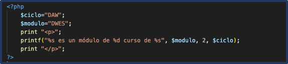
Cada especificador de conversión va precedido del caracter % y se compone de las siguientes partes:
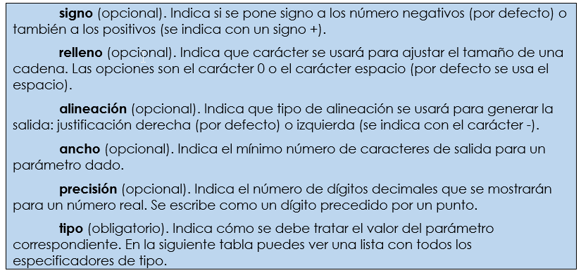
algunos de los especificadores de tipo para esta función son:
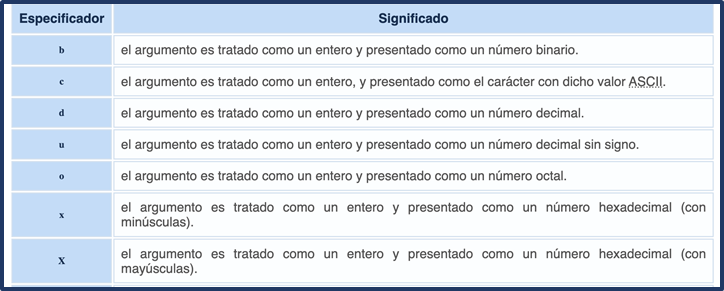
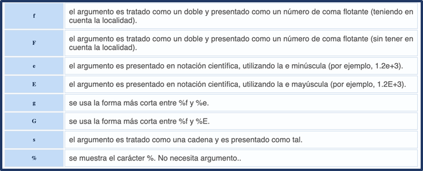
Algunos ejemplos de las especificaciones de formato de la función printf de PHP:
1. Formato de Enteros
- **`%d`**: Formatea un número entero en base 10 (decimal).
```php
printf("Número decimal: %d\n", 42); // Salida: Número decimal: 42
%b: Formatea un número entero como binario.
printf("Número binario: %b\n", 5); // Salida: Número binario: 101
%o: Formatea un número entero como octal.
printf("Número octal: %o\n", 8); // Salida: Número octal: 10
%x: Formatea un número entero como hexadecimal (letras en minúscula).
printf("Número hexadecimal: %x\n", 255); // Salida: Número hexadecimal: ff
%X: Formatea un número entero como hexadecimal (letras en mayúscula).
printf("Número hexadecimal: %X\n", 255); // Salida: Número hexadecimal: FF
2. Formato de Números con Punto Flotante
%f: Formatea un número de punto flotante (decimal).
printf("Número flotante: %f\n", 3.14159); // Salida: Número flotante: 3.141590
%.2f: Limita el número de decimales a 2.
printf("Número flotante con 2 decimales: %.2f\n", 3.14159); // Salida: Número flotante con 2 decimales: 3.14
%e: Formatea un número de punto flotante en notación científica (minúscula).
printf("Notación científica: %e\n", 12345.6789); // Salida: Notación científica: 1.234568e+4
%E: Formatea un número de punto flotante en notación científica (mayúscula).
printf("Notación científica: %E\n", 12345.6789); // Salida: Notación científica: 1.234568E+4
3. Formato de Cadenas de Texto
%s: Inserta una cadena de texto.
printf("Hola, %s!\n", "Mundo"); // Salida: Hola, Mundo!
%.5s: Limita la longitud de la cadena a los primeros 5 caracteres.
printf("Cadena limitada: %.5s\n", "Hola, Mundo"); // Salida: Cadena limitada: Hola,
4. Formato de Caracteres
%c: Imprime un carácter basado en su valor ASCII.
printf("Carácter ASCII 65: %c\n", 65); // Salida: Carácter ASCII 65: A
5. Alineación y Relleno
%5d: Alinea el número a la derecha en un campo de 5 caracteres de ancho.
printf("Número alineado a la derecha: '%5d'\n", 42); // Salida: Número alineado a la derecha: ' 42'
%-5d: Alinea el número a la izquierda en un campo de 5 caracteres de ancho.
printf("Número alineado a la izquierda: '%-5d'\n", 42); // Salida: Número alineado a la izquierda: '42 '
%05d: Rellena con ceros a la izquierda para que el campo tenga 5 caracteres de ancho.
printf("Número con ceros a la izquierda: '%05d'\n", 42); // Salida: Número con ceros a la izquierda: '00042'
6. Formato de Porcentaje
%%: Imprime un signo de porcentaje literal.
printf("Esto es un porcentaje: 100%%\n"); // Salida: Esto es un porcentaje: 100%
7. Combinación de Formatos
Puedes combinar varias especificaciones en una sola llamada a printf:
$nombre = "Juan";
$edad = 30;
$altura = 1.75;
printf("Nombre: %s, Edad: %d años, Altura: %.2f metros\n", $nombre, $edad, $altura);
// Salida: Nombre: Juan, Edad: 30 años, Altura: 1.75 metros
La función printf en PHP es una herramienta poderosa para formatear e imprimir cadenas de texto con precisión. Los ejemplos anteriores muestran cómo usar las especificaciones de formato para trabajar con diferentes tipos de datos, desde enteros hasta cadenas y números de punto flotante.
Programa 3: Especificadores
Programa3.php: Especificadores de formato (Ruta:dwes/UD2/Entrega1/Programa3_Especificadores.php)
Crea un script PHP con diferentes variablesnuméricas y de cadena relacionadas con productos de alguna empresa y muéstralas por pantalla, dos de ellas con 2 decimales, otras dos con 4 decimales, un entero (sin decimales), una tipo cadena, una de ellas en binario, en notación científica, almacena una variable real, con 3 decimales.. todo lo que quieras usar basándote en los ejemplos anteriores
Programa 4: Especificadores Completa huecos ???
Programa4.php: Especificadores de formato (Ruta:dwes/UD2/Entrega1/Programa4_huecos.php)
Rellena los huecos (???) para que el programa muestre correctamente las variables de un vuelo.
Debes usar printf con los siguientes formatos:
%spara cadenas.%dpara enteros.%fcon precisión de 2, 3 o 4 decimales.%bpara binarios.%epara notación científica.%%para mostrar el símbolo%.- Control de ancho y alineación (
%10s,%-10s,%8.2f, …).
Código incompleto:
<!DOCTYPE html>
<html lang="es">
<head>
<meta charset="UTF-8">
<title>Actividad - printf incompleto</title>
</head>
<body>
<h1>Actividad con printf</h1>
<?php
$aerolinea = "AirGlobal";
$numVuelo = 1205;
$precioBase = 245.5;
$tasaCombustible= 12.3456;
$ocupacion = 87; // porcentaje de ocupación
$codigoInterno = 0b101101;
$distancia = 5.6e3; // 5600 km
$velCrucero = 902.456; // km/h
// Imprime el nombre de la aerolínea en 10 espacios, alineado a la izquierda
printf("Aerolínea: [%-10s]<br>", ???);
// Número de vuelo como entero
printf("Vuelo Nº: %???<br>", ???);
// Precio base con 2 decimales, en un campo de 8 caracteres
printf("Precio base: [%8.2f €]<br>", ???);
// Tasa combustible con 4 decimales
printf("Tasa combustible: %.???f €<br>", ???);
// Porcentaje de ocupación (mostrar el símbolo %)
printf("Ocupación: %d%%<br>", ???);
// Código interno en binario
printf("Código interno: %???<br>", ???);
// Distancia en notación científica
printf("Distancia: %e km<br>", ???);
// Mezcla de variables en la misma línea (vuelo y velocidad)
printf("El vuelo %d de %s vuela a %.3f km/h<br>", ???, ???, ???);
?>
</body>
</html>
- Sprintf
Existe una función similar a printf pero en vez de generar una salida con la cadena obtenida, permite guardarla en una variable: sprintf .
$txt_pi = sprintf("El número PI vale %+.2f", 3.1416);
Diferencia clave:
printf→ imprime directamente.sprintf→ devuelve la cadena formateada que luego puedes guardar en una variable, concatenar o mostrar conecho.
Programa4.php: Especificadores de formato (Ruta:dwes/UD2/Entrega1/Programa4_huecos.php)
Completa el programa 4 anterior haciendo uso de SPRINTF y comenta en tu readme las diferencias.
Añade alguna variable más al fprintf
<?php
// Ejemplo con sprintf (genera una cadena formateada sin imprimir)
$mensaje = sprintf(
"El vuelo %d de %s recorrerá %.1f km con un %d%% de ocupación.",
$numVuelo,
$aerolinea,
$distancia,
$ocupacion
);
// Ahora lo mostramos con echo
echo "<p><em>Mensaje generado con sprintf:</em> $mensaje</p>";
?>
3. Cadenas de texto
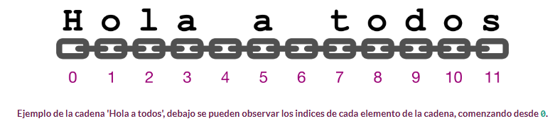
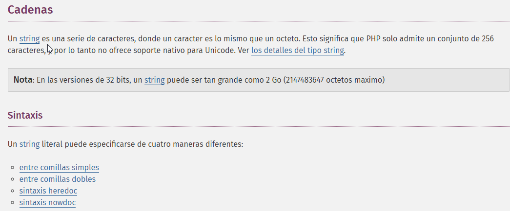
En PHP las**[ cadenas de texto ](https://www.php.net/manual/es/language.types.string.php)**pueden usar tanto comillas **simples** como comillas **dobles** . Sin embargo, hay una diferencia importante entre usar unas u otras.
- Cuando se pone una variable dentro de unas comillas dobles, se procesa y se sustituye por su valor. Así, el ejemplo anterior sobre el uso de print también podía haberse puesto de la siguiente forma:
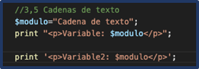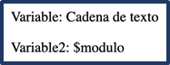
- La variable $modulo se reconoce dentro de las comillas dobles, y se sustituye.
- Con comillas simples, no se realizaría sustitución alguna.
- Cuando se usan comillas simples, sólo se realizan dos sustituciones dentro de la cadena: cuando se encuentra la secuencia de caracteres \' , se muestra en la salida una comilla simple; y cuando se encuentra la secuencia \ , se muestra en la salida una barra invertida.
Secuencias de escape
- Estas secuencias se conocen como secuencias de escape .
En las cadenas que usan comillas dobles, además de la secuencia \ , se pueden usar algunas más, pero no la secuencia \' . En esta tabla puedes ver las secuencias de escape que se pueden utilizar, y cuál es su resultado.
Secuencias de escape
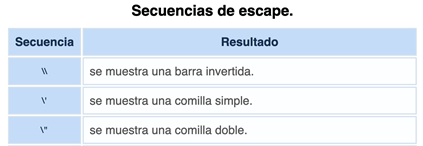
Concatenación
En PHP tienes dos operadores exclusivos para trabajar con cadenas de texto. Con el operador deconcatenación punto (.) puedes unir las dos cadenas de texto que le pases como operandos. El operador de asignación y concatenación (.=) concatena al argumento del lado izquierdo la cadena del lado derecho.
Programa5_cadenas.php
Programa5_cadenas.php: Cadenas de texto (Ruta:dwes/UD2/Entrega1/)
Prueba a mostrar información con diferentes cadenas de texto. Para ello,PERSONALIZA el siguiente bloque de código y comenta brevemente con tus palabras y capturas las funciones utilizadas y su uso, puedes ayudarte del manual PHP. Lo debatiremos en clase.
- Comillas dobles → interpretan secuencias
\n,\t, etc. - Comillas simples → se muestran literales.
- Secuencias comunes (
\n,\t,\",\\,\$). - Unicode y hexadecimales.
heredocynowdoc.
<!DOCTYPE html>
<html lang="es">
<head>
<meta charset="UTF-8">
<title>Cadenas y secuencias de escape en PHP</title>
<style>
body { font-family: Arial, sans-serif; padding:20px; line-height:1.5; }
pre { background:#f4f4f4; padding:10px; border-radius:5px; }
h2 { margin-top:25px; }
</style>
</head>
<body>
<h1>Estudio de cadenas y secuencias de escape en PHP</h1>
<?php
// Ejemplos con comillas dobles (interpreta escapes)
$dobles = "Hola\nMundo\t(esto está tabulado)\nComilla doble: \" Barra invertida: \\ Variable: \$valor";
// Ejemplos con comillas simples (no interpreta escapes, salvo \' y \\)
$simples = 'Hola\nMundo\t(esto aparece literal)\nComilla simple: \' Barra invertida: \\ Variable: $valor';
// Unicode y Hex
$unicode = "Avión: \u{2708} (símbolo avión)";
$hex = "Códigos hexadecimales: \x41\x42\x43 = ABC";
// Heredoc (interpreta escapes)
$heredoc = <<<TEXT
Cadena con heredoc:
- Nueva línea \n (se interpreta)
- Tabulación \t (se interpreta)
- Variable \$unicode: $unicode
TEXT;
// Nowdoc (no interpreta escapes)
$nowdoc = <<<'TEXT'
Cadena con nowdoc:
- Nueva línea \n (literal)
- Tabulación \t (literal)
- Variable $unicode (no sustituida)
TEXT;
?>
<h2>Con comillas dobles</h2>
<pre><?php echo $dobles; ?></pre>
<h2>Con comillas simples</h2>
<pre><?php echo $simples; ?></pre>
<h2>Unicode y Hex</h2>
<pre><?php echo $unicode . "\n" . $hex; ?></pre>
<h2>Heredoc</h2>
<pre><?php echo $heredoc; ?></pre>
<h2>Nowdoc</h2>
<pre><?php echo $nowdoc; ?></pre>
</body>
</html>
Comparativa:
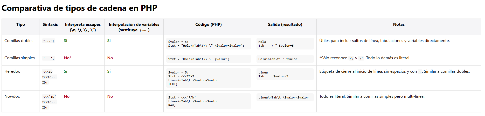
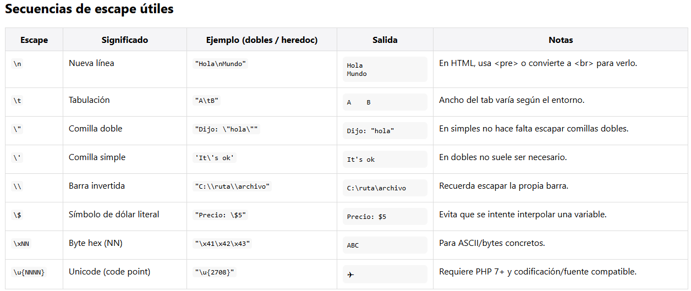
Actividad Resumen
Entregable
Tienes la info en la sección "Actividad entregable"
Presentaciones
Puedes acceder a las presentaciones desde la carpeta compartida